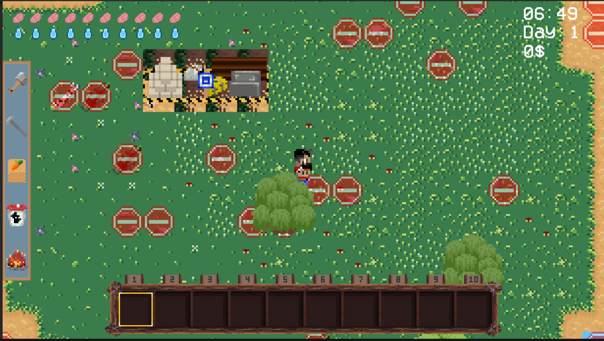
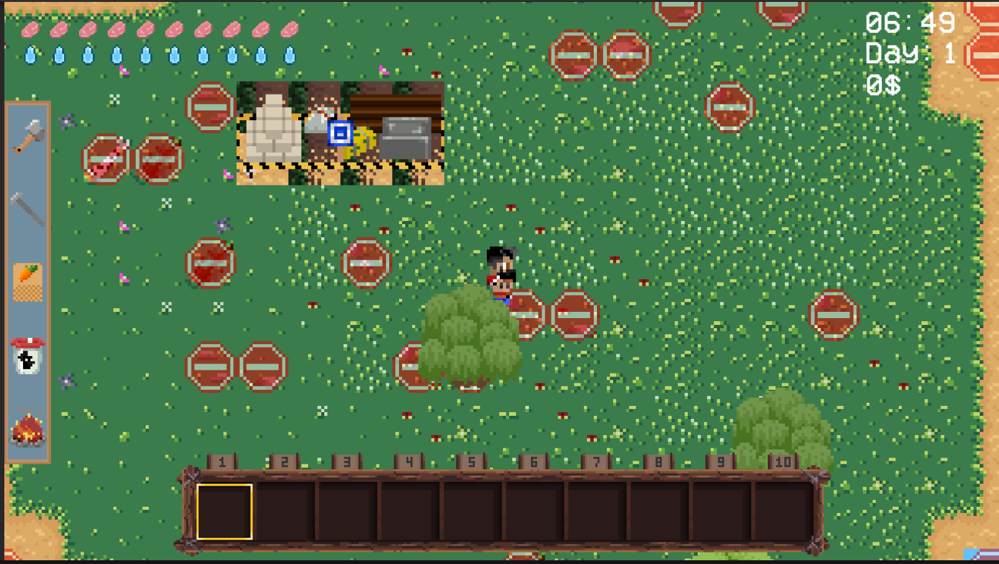
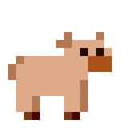

About the game
Meet Jord, a Swedish explorer,who set off to explore the Baltic Sea. A terrible storm happened while
he was
travelling across the ocean, smashing his ship and making it powerless against the rising waves.
The vessel was ripped apart in the middle of the chaos, leaving Jord adrift.
As fate would have it, the water carried Jord's body towards
an island he had never seen before. Miraculously, he washed ashore, tired and destroyed but alive.
He named the island - Ödesholmen, meaning "Island of Destiny."
The island, seemingly untouched and shrouded in mystery, became both his shelter and his unexpected
new home....
Is Ödesholmen the only island in this game? Surely there must be something more...
There is!
You can visit three additional islands beyond Ödesholmen.
However, in order to access these islands, you must first find and repair the harbor first.
Once the harbor is fixed, you can visit the Cave island, which is rich in stones and ores, or the
Forest island, where you can gather plenty of wood for your farm.
Last but not least is Town - another location where you can trade for materials to help you with
expanding your farm, meet NPCs, getting quests and more!
Every island will have it's own unique lore - including different enemies and resources.
Harvest Grove is a 2D top-down game with procedurally generated islands.
Unlike other games like Stardew Valley, each time you create a new world, you will face a
different terrain, making every world an exiciting and new adventure.
Map samples
In game images
 

Our team
We are a small indie team located all around the world.
Co-founders
Alex M.
Co-founder and Unity developer with 3+ years of experience in Unity
Sasha CH.
Co-founder and Unity developer with 3+ years of experience in Unity
Artists
Lead artist - "The pig airforce successfully sunk the unity ship"
Lead artist - UI creator
UI artist - "That's why I replied to him silly"
Crop artist - "Brian I still cant see your name without thinking of Monty Python's Life of Brian"
Lucas
Jordan
Ian
Composer
Music composer with 7+ years of experience
Programmers
Ianis-Constantin
Contact
Art showcase
Small showcase of our art.

GDD
Technical overview
- Engine: Unity3D
- Version: 2023.1.4f
- Style: 2D top-down
- Programming language: C#
- Tools:
- Version control: Git + Github
- Project management: Trello (Artists); Github projects (Programmers)
- Asset management: Google drive
- Code documentation: Confluence
Game's concept
- Title: Harvest Grove
- Genre: Farming adventure
- Target Audience: Fans of casual gaming, simulation games, and farming games
- Platforms: PC
- Project length: 12+ months
- Beta date: February 2024
- Project start: February 2023
- Theme: It’s set in the 2000s on a remote part of the world with villages
Core gameplay mechanics
- Farming simulation
- Plant and harvest crops, breed animals, make profit, upgrade the farm
- Exploration
- The game will have unique islands, which player can visit and gather more interesting
resources, get a new quests and meet new people
- Crafting
- Building
- Cooking
- Fishing
- Visit an open sea to fish for unuq fishes
- Fighting the crops / enemies
- There is a chance that a crop can attack the player; Player can meet a new enemies on
each island
Art manual